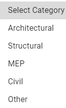
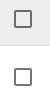
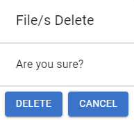
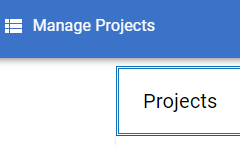
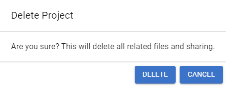

import os import sys import module_CommonResource ifLogin = 0 ifCloseChrome = 0 if(ifLogin): link = module_CommonResource.selectDevOrProd() module_CommonResource.openChrome() module_CommonResource.openFlair3DAndLogin(link) def createNewProject(projectName, modelPath): # Make sure we are on the dashboard click(module_CommonResource.getFlair3DLogoInTheApp()) wait(2) # Click on open new project click(module_CommonResource.getFlair3DLogoInTheApp().targetOffset(1425,70)) # Click on Project Name Textbox click(module_CommonResource.getFlair3DLogoInTheApp().targetOffset(270,75)) type(projectName) # Click on the description text box click(module_CommonResource.getFlair3DLogoInTheApp().targetOffset(265,150)) paste("Test Project created through testing Automation. If you find this you may delete it.") # Click on create button click(module_CommonResource.getFlair3DLogoInTheApp().targetOffset(1335,340)) # Wait for the project to create wait(2) # Click on upload new file icon click(module_CommonResource.getFlair3DLogoInTheApp().targetOffset(1465,290)) print "LOG: New popup dialog should appear. Click on 'Select From Computer' button." click(module_CommonResource.getFlair3DLogoInTheApp().targetOffset(725,350)) # Select the file stored on the path. print "INFO: It is assumed that the file is there at %s" % modelPath wait(2) # wait for file open dialog to appear. type(modelPath) type(Key.ENTER) wait(2) print "LOG: Clicking on select category dropdown" selectCategoryDropdownLoc = find(module_CommonResource.getFlair3DLogoInTheApp()).getTarget().offset(680,425) click(selectCategoryDropdownLoc) assert exists(), "ERROR: Select category dialog hasn't appeared or there are changes in it." # Select Structural click(Location(selectCategoryDropdownLoc.getX(), selectCategoryDropdownLoc.getY() + 75)) wait(1) # Select upload click(Location(selectCategoryDropdownLoc.getX(), selectCategoryDropdownLoc.getY() + 50)) # Wait till upload message appears wait(, 15) click(Pattern().targetOffset(130,0), 5) # Close message print "LOG: clicking at an interval of 2 seconds" waitSeconds = 0 while exists(, 2): # Click on the model name to open. click(module_CommonResource.getFlair3DLogoInTheApp().targetOffset(515,390)) waitSeconds += 2 wait(2) print "LOG: Waiting for %s seconds for model to open" % waitSeconds if(waitSeconds > 20): break # wait for model to load and be ready loading wait(module_CommonResource.getModelsAreReadyMessage(), 5) # Confirm the visuals. assert exists(, 2), "ERROR: Check if Forge window appeared correctly" print "INFO: Project upload seems to be working fine! Now let's check delete." def deleteAllTheModelsInProject(projectName): module_CommonResource.searchForProjectAndOpen(projectName) # Check if the project has any models. Delete the models first if exists(, 2): # Click on Select All Checkbox click(module_CommonResource.getFlair3DLogoInTheApp().targetOffset(280,338)) # Click on Delete button click(module_CommonResource.getFlair3DLogoInTheApp().targetOffset(1425,290)) assert exists(, 2), "ERROR: No delete files dialog appeared." # Click on delete button click(Pattern().targetOffset(-50,60), 2) assert not exists(, 5), "ERROR: After deleting all models, still there are some undeleted ones." # Proceed to delete the project click(module_CommonResource.getFlair3DLogoInTheApp()) # Go to dashboard # Go to Manage project. click(module_CommonResource.getFlair3DLogoInTheApp().targetOffset(1680,0)) assert exists(), "ERROR: Doesn't seem like I am inside Manage Projects" # Click on the first entry. print "INFO: Assumed that the first project will be the latest one. So deleting it." click(module_CommonResource.getFlair3DLogoInTheApp().targetOffset(270,145)) # Click on the delete project click(module_CommonResource.getFlair3DLogoInTheApp().targetOffset(1455,75)) assert exists(), "ERROR: Delete project dialog didn't appear." # Click on delete click(Pattern().targetOffset(80,65)) wait(5) # Make sure we are on the dashboard click(module_CommonResource.getFlair3DLogoInTheApp()) wait(1) # Now check whether the project still exists type(Key.F5) # First refresh the page wait(module_CommonResource.getFlair3DLogoInTheApp(), 5) wait(1) module_CommonResource.searchProjectByName(projectName) searchRegion = Region(805,250,311,342) if searchRegion.exists(, 2): print "INFO: Project has been successfully deleted." else: assert 0, "INFO: Project seems to be still there on dashboard after even deleting." # After signing in createNewProject("AutoTest", "C:\FlairAutoTestsSamples\Automation_Upload_Test_Sample.stl") deleteAllTheModelsInProject("AutoTest") Debug.log("TEST PASSED!!")